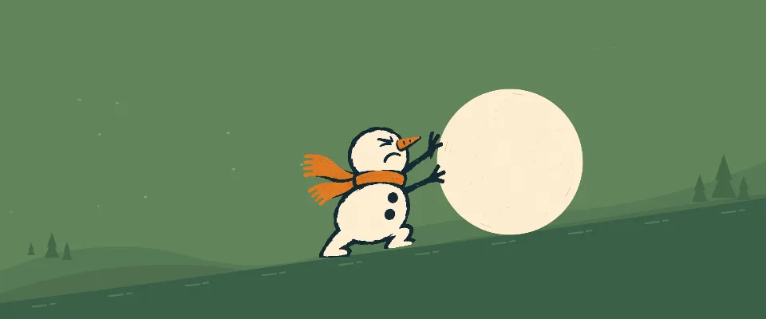
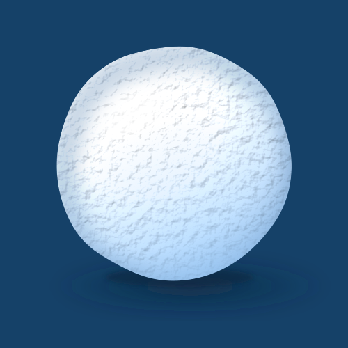
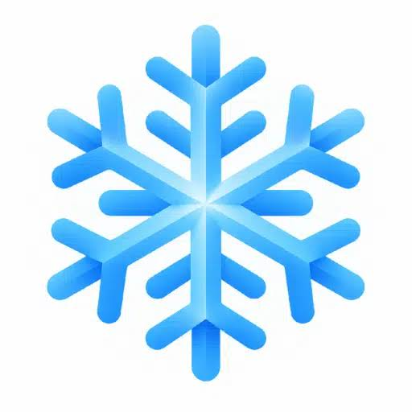

Airdrop analytics on Solana
After the airdrop,
who stays?
Follow a distribution from creator fees to the wallets that receive it. See how many are still holding seven days later.
Network snapshot
Archived data
- Wallets reached
- 46,046
- Coins registered
- 20
- Tokens distributed
- 2.92M
Inside a round
How it works
From fees to holders
Explore the mechanismRegister a coin
The creator adds the token’s mint address and sets up a wallet for its distribution fees.
Fund the round
Creator fees go into the distribution wallet and provide the budget for the round.
Buy and distribute
The budget buys the token, which is sent to eligible wallets that don’t already hold it.
Measure retention
Compare who received the token with who still holds it at the day-seven checkpoint.
Watch the snowball roll

Explore the coin archive
Historical distribution figures
| Coin | Wallets reached | Retained | Archive retention |
|---|---|---|---|
 Snowball$Snowball | 45,991 | 39,469 | 86% |
| 967 | 731 | 76% | |
| 266 | 218 | 82% | |
 Snowflake$SNOWFLAKE | 132 | 112 | 85% |
7-day retention report
What happened after the drop?
See how many recipients still hold the token at day seven. Import a distribution and balance snapshot to calculate retention for your own round.
Open the example report- Recipients
- 100
- Still holding on day 7
- 37
- Example retention
- 37%
Was your wallet reached?
Look up an address in the archived holder network.
Common questions
How is day-seven retention calculated?
The report counts wallets that didn’t hold the token before the distribution and still have a positive token balance at the day-seven checkpoint.
Are the figures on this page live?
The network snapshot and coin table come from the archived site. The example report uses sample data.
Can I use my own distribution data?
Yes. Open the report workspace and import a JSON snapshot. The report uses the balances and transaction references supplied in the file.
Can I send an airdrop from this site?
This version supports browsing, launch drafts and reporting. Sending tokens and managing distribution rounds require a connected project service. See site status.